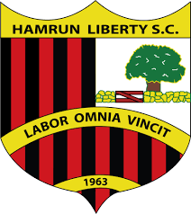

Since its foundation, the main aim of the club was to be social, recreation and educational.
This club serves as a place for Hamrun locals to have a place to meet for recreational purposes in a club that is neither political nor music related. It is open for everyone without any discrimination of race, nationality or religious beliefs. ... 
For many years, the club served as a place for Civic Council to meet, one of the first on the island. This council was similar to current local council with the difference being that the council members weren’t elected by Hamrun locals but was made up of representatives of different established clubs in Hamrun.
The club was used many times as a neutral place to hold meetings between different cubs and individuals who had some kind of disputes to settle between them. The club was also used as a venue for religious, recreational, informative, cultural, and medical meetings.
 For some time, the club was used as a place for guitar and lute enthusiasts to meet as a means of relaxation whilst practicing their
passion. The club has many success stories in the sports field. It had one of the best enthusiast football teams which went by the name,
Hamrun Eagles. The club has many honours that it won along the years in billiard and darts.
For some time, the club was used as a place for guitar and lute enthusiasts to meet as a means of relaxation whilst practicing their
passion. The club has many success stories in the sports field. It had one of the best enthusiast football teams which went by the name,
Hamrun Eagles. The club has many honours that it won along the years in billiard and darts.Today, the club serves as the official sede of other clubs like R.A.F.A – Royal Air Force Association, which is a club for ex-service men of the Royal Air Force. The Dun Neric Foundation also uses the club as a meeting place the foundation was founded in honour of the ex-Parish Priest Fr. Neric Cordina who was loved by many and will remain remembered for the many works, he did in the Hamrun Parish, and for starting the works on the Dome of the Church.